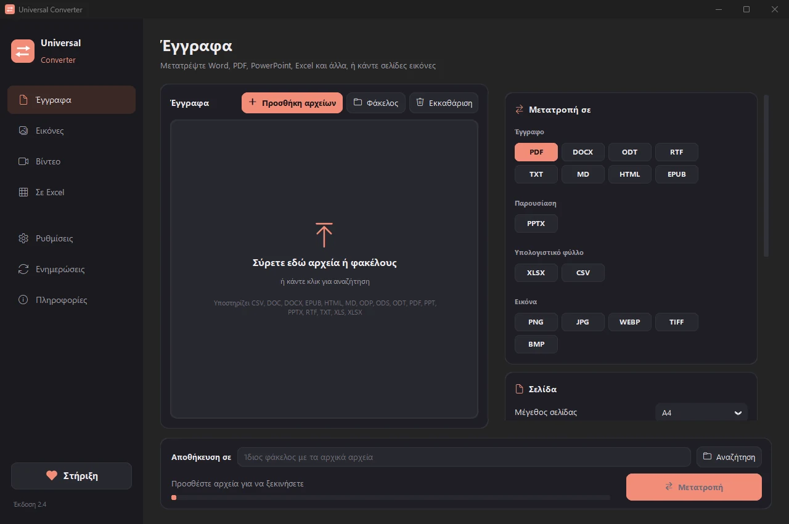

Μετατροπή εγγράφων Word σε PDF
Το PDF φαίνεται ίδιο σε κάθε συσκευή, γι' αυτό είναι ο ασφαλέστερος τρόπος να στείλετε βιογραφικό, σύμβαση ή αίτηση. Το Universal Converter μετατρέπει έγγραφα Word και άλλα σε PDF χωρίς ανέβασμα και μπορεί να ενώσει πολλά αρχεία σε ένα PDF.
Εγκατάσταση και ενημερώσεις
- Ανοίξτε το .dmg που κατεβάσατε και σύρετε το Universal Converter στις Εφαρμογές.
- Ανοίξτε την εφαρμογή. Την πρώτη φορά το macOS την μπλοκάρει, επειδή δεν είναι υπογεγραμμένη από την Apple: πατήστε «Τέλος».
- Ανοίξτε Ρυθμίσεις συστήματος > Απόρρητο και ασφάλεια, κυλήστε προς τα κάτω, πατήστε «Άνοιγμα ούτως ή άλλως» και δώστε τον κωδικό σας. Αυτό γίνεται μόνο μία φορά.
Ενημερώσεις: αν το επιτρέψετε όταν ανοίξει πρώτη φορά, η εφαρμογή ελέγχει για νέες εκδόσεις σε κάθε εκκίνηση, επαληθεύει την ψηφιακή τους υπογραφή και τις εγκαθιστά όταν το επιλέξετε.
Εγκατάσταση και ενημερώσεις
- Πατήστε «Λήψη για Android» από το κινητό σας.
- Ανοίξτε το αρχείο που κατέβηκε. Αν το ζητήσει το Android, επιτρέψτε στον περιηγητή ή στη διαχείριση αρχείων να εγκαθιστά εφαρμογές.
- Πατήστε «Εγκατάσταση».
Ενημερώσεις: η εφαρμογή ελέγχει περίπου μία φορά την ημέρα και σας ενημερώνει όταν υπάρχει νέα έκδοση. Κατεβάστε την με τον ίδιο τρόπο και εγκαταστήστε την πάνω από την παλιά· οι ρυθμίσεις σας διατηρούνται.
Πώς γίνεται
- Ανοίξτε το Universal Converter και επιλέξτε Έγγραφα & PDF στα αριστερά.
- Σύρετε τα αρχεία σας ή έναν ολόκληρο φάκελο στο παράθυρο, ή πατήστε Προσθήκη αρχείων.
- Επιλέξτε PDF. Για πολλά αρχεία σε ένα PDF, χρησιμοποιήστε το Συνένωση σε ένα PDF.
- Πατήστε Μετατροπή. Τα νέα αρχεία αποθηκεύονται δίπλα στα αρχικά ή στον φάκελο που επιλέγετε.

Γιατί χωρίς internet;
Το Universal Converter κάνει τη δουλειά στη δική σας συσκευή. Τα αρχεία σας μένουν ιδιωτικά, τα μεγάλα αρχεία δεν είναι πρόβλημα και λειτουργεί χωρίς σύνδεση στο internet.
Τι άλλο μπορεί να κάνει
- Μετατροπή PDF σε Word
- Ένωση πολλών αρχείων σε ένα PDF
- Συμπίεση PDF στο μέγεθος που θέλετε
- Μετατροπή σελίδων PDF σε εικόνες JPG
- Σαρωμένο έγγραφο σε επεξεργάσιμο αρχείο Word
- Μετατροπή εικόνων μεταξύ JPG, PNG, WEBP και άλλων
- Αλλαγή μεγέθους εικόνων ή μείωση σε μέγεθος αρχείου
- Ένωση φωτογραφιών σε ένα PDF
- Αντιγραφή του κειμένου από εικόνα (OCR)
- Συμπίεση βίντεο χωρίς ανέβασμα
- Μετατροπή βίντεο μεταξύ MP4, MKV, WebM, MOV και AVI
- Αποθήκευση του ήχου ενός βίντεο σε MP3
- GIF από βίντεο
- Πίνακες από PDF σε Excel
- Μετατροπή κίνησης λογαριασμού από PDF σε Excel
- Εξαγωγή πινάκων από τιμολόγια PDF σε Excel
- Υπογραφή PDF
- Συμπλήρωση φόρμας PDF